Orlando |
||||||||
|
|
|
|||||||
Ilustración | Nº de herramienta / Descripción |
|---|---|
|
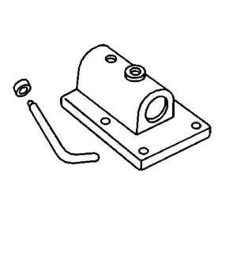 | DT-113-2-A J-3289-20 KM-113-2 Útil de sujeción |
|
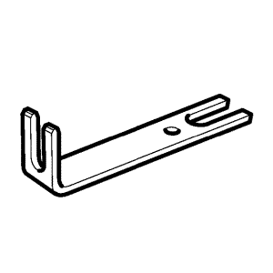 | DT-6042-A KM-6042-A Llave de desmontaje |
|
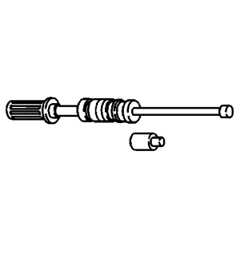 | DT-7004 KM-J-7004 J-6125-B Martillo de percusión |
|
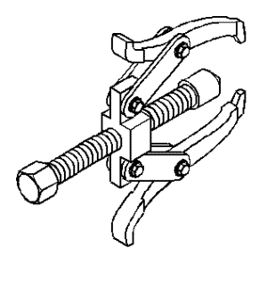 | CH-161-B J-22888-20A Extractor de cojinetes con patas extractoras |

| DT-22912-B J-22912-01 Extractor de cojinetes universal |
|
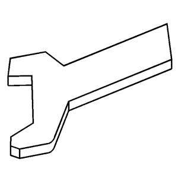 | DT-36633 J-36633 Útil de fijación de anillos de retención |
|
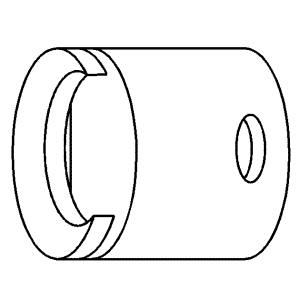 | DT-42469 J-42469 Herramienta de desmontaje del eje de mando |
|
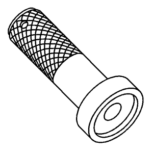 | DT-519 KM-519 Herramienta de montaje de anillos |
|
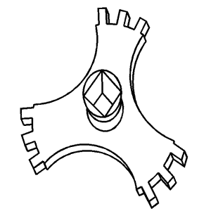 | DT-520 KM-520 Herramienta de desmontaje y montaje |
|
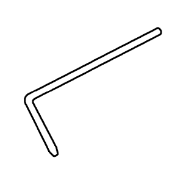 | DT-527-A KM-527-A Herramienta de ajuste |
|
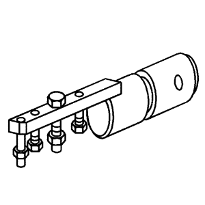 | DT-552 KM-552 Útil |
|
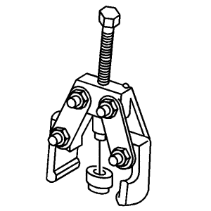 | DT-553-A KM-553-A 87 92 913 Extractor de la 5ª marcha |
|
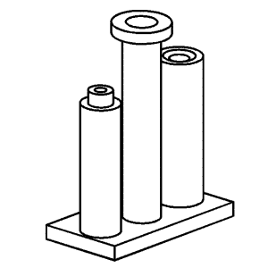 | DT-554 KM-554 Herramienta de montaje |

| DT-6263 KM-6263 Herramienta de desmontaje y montaje |

| DT-47648 Soporte del cambio |

| EN-47649 EN-28467-B J-28467 DW-110-060 Puente del motor |
|
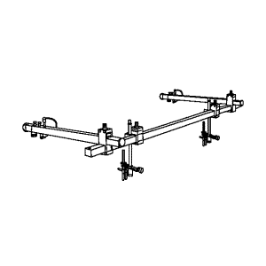 | EN-47650 Bastidor de retención |

| EN-47650-030 Extensiones para el bastidor de soporte EN-47650 |
|
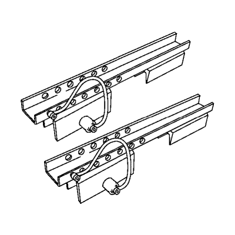 | EN-47650-50 Carril de soporte para el puente del motor EN-47649 |

| EN-47650-250 Adaptador delantero para el bastidor de retención EN-47650 |

| EN-47650-300 Adaptador trasero para el bastidor de retención EN-47650 |
|
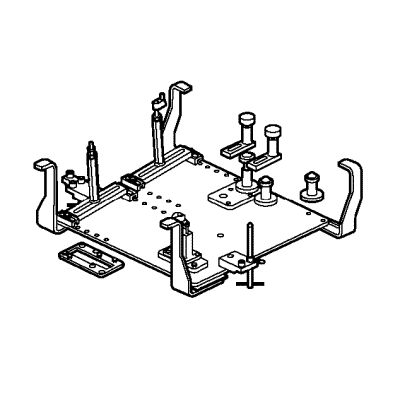 | CH-49290 Herramienta de fijación del motor |
| © Copyright Chevrolet. Reservados todos los derechos |